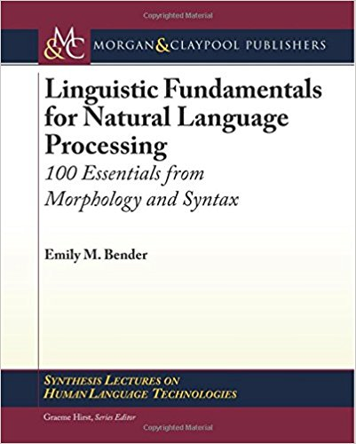
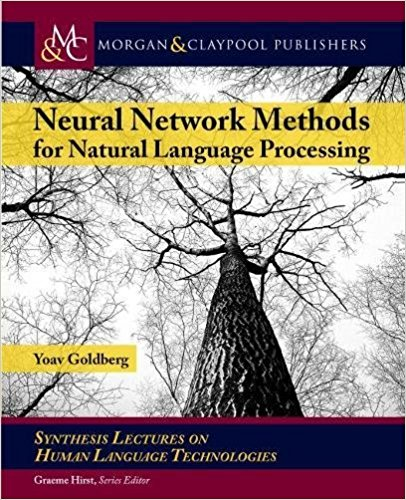
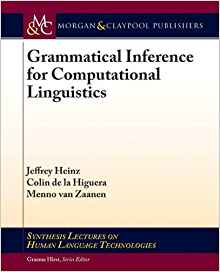
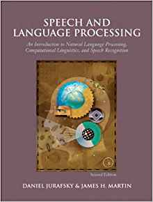
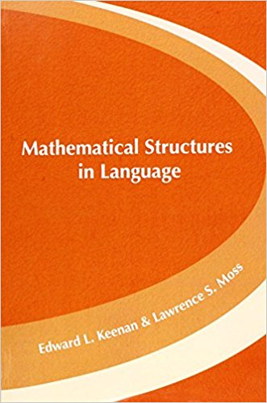
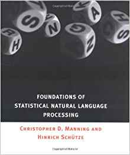
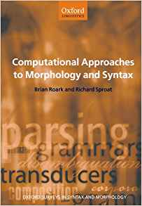

Lecture Notes
- Language and Technology (LIN 120)
- Computational Linguistics 1 (LIN 537)
- Computational Linguistics 2 (LIN 637)
- Mathematical Methods (LIN 539)
- Parsing and Processing (LIN 630)
- Skillz hour: Git Training
Recommended Readings

Emily M. Bender (2013): Linguistic Fundamentals for Natural Language Processing

Yoav Goldberg (2017): Neural Network Methods in Natural Language Processing

Jeffrey Heinz, Colin de la Higuera, and Menno van Zaanen (2015): Grammatical Inference for Computational Linguistics

Daniel Jurafsky & James H. Martin (2008): Speech and Language Processing

Edward L. Keenan & Lawrence S. Moss (2016): Mathematical Structures in Language

Christopher D. Manning & Hinrich Schütze (2008): Foundations of Statistical Natural Language Processing

Brian Roark and Richard Sproat (2007): Computational Approaches to Morphology and Syntax
Software
-
mgproc
A Python package for modeling human sentence processing with Minimalist grammars -
CompLab VM
A virtual machine image for doing computational linguistics with Python